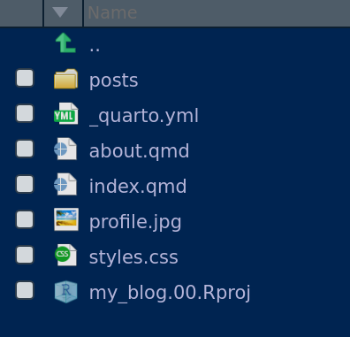
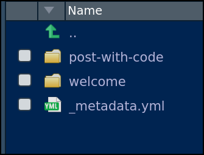
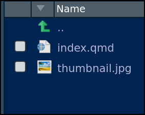

![]()
Como todo blog que se precie, üòú, en el primer post describir√© (un poco) el proceso de creaci√≥n del blog. Post provisional (WORK IN PROGRESS!!)
Introducción
LLevo unos días intentando crear un quarto blog. ya tengo experiencia, así que no me está resultando muy complicado, pero mejor si dejo aquí algunas notas.
Sí, la verdad es que es conveniente apuntarse cosas que luego …
¿Qué es Quarto?
Cómo se dice en su página web:
Quarto® is an open-source scientific and technical publishing system built on Pandoc
Es como una “segunda versión” de Rmarkdown:
Quarto is a multi-language, next generation version of R Markdown from RStudio, with many new features and capabilities. Like R Markdown, Quarto uses Knitr to execute R code, and is therefore able to render most existing Rmd files without modification.
Quarto, no es un paquete de R, es una aplicación independiente, de forma que se puede usar sin R. Puede usarse para correr chunk de R, Phyton, Julia y Observable. Se pueden generar documentos reproducibles con markdown o con jupiter notebooks.
Como con Rmarkdown, se pueden hacer: reports, presentations, websites, blogs, and books in HTML, PDF, MS Word, ePub, and more.
¿Cómo hacer un blog con Quarto?
Has de instalar Quarto1
Si sigues la ruta de menús:
File > New Project > New Directory > Quarto Blogse te creará una Rproject con un blog.El Rproject que acabamos de crear tendrá esta estructura de archivos y carpetas:



Referencias
(Algunos artículos sobre Quarto)
Footnotes
Las últimas versiones de RStudio ya instalan Quarto, aunque Mine recomienda actualizar Quarto frecuentemente↩︎
Reuse
Citation
@online{j.pérez2022,
author = {Pedro J. Pérez},
title = {Creación de Un Blog Con {Quarto}},
date = {2022-07-11},
url = {https://perezp44.github.io/pjperez.blog.2022//posts/2022-07-11_my-quarto-blog},
langid = {en}
}